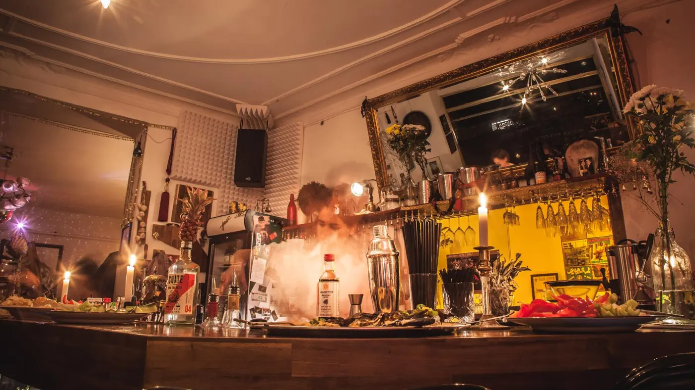

The lobby is the first thing a guest sees and the last thing a hotel thinks of as a business. At Amano we saw it could be far more: a restaurant with a name, an audience of its own, and a reason to come even if you’re not staying upstairs.
Most lobbies are designed around check-in: armchairs, acceptable coffee, perhaps a small bar that opens in the evening. They serve guests who are already in the building, but they don’t bring anyone in from the street. When we came to Amano in Berlin, the brief was the opposite: build a real restaurant, not a dining corner inside a hotel.
1. Concept comes first
A lobby restaurant only works when it has an identity that stands on its own – a menu, music, lighting and service people talk about to their friends. We didn’t “adapt” Yafo to the hotel. We brought its spirit – Israeli food, energy and warm hospitality – and let the hotel benefit from it.
Guests don’t come to a lobby. They come to a place. The lobby just has to stop getting in the way.

2. Design the flow, not just the furniture
- A clear separation between reception and seating, so diners never feel they’re eating in a corridor.
- A bar visible from the entrance – it is the invitation to come in.
- Lighting that shifts from morning to night, because the same room has to work as a café and as a restaurant.
3. A restaurant team, not a hotel team
Front desk and restaurant service are two different professions, and the difference is felt in the first second: are you welcomed as a guest, or as a room number? Much of the work is building a team that understands hospitality, and agreeing clear lines with hotel management – who owns what, how event bookings flow, what happens at peak times.

4. Measure it like a restaurant
If the lobby is a business, measure it as one: revenue, food cost, labour cost, and how many diners come from outside the hotel. When those numbers are on the table every week, decisions about the menu, the rota and events become much easier.
The bottom line
A lobby that becomes a restaurant delivers two things: additional revenue for the hotel, and the reputation of a living place people want to be in. It doesn’t necessarily require a major renovation. It requires a concept, a team and a method.